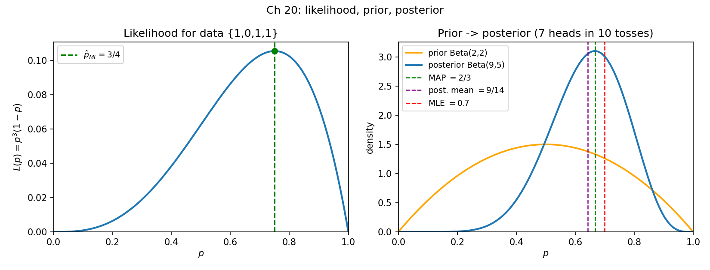

20. Estimation: MLE and Bayesian/MAP
Chapter 19 defined what is being estimated — the mean vector \(\boldsymbol{\mu}\) and the covariance matrix \(\boldsymbol{\Sigma}\) of a distribution. This chapter answers the next question: given data, how do you actually find those numbers? Two philosophies, one from the MLF deck and one from the MLT slides: maximum likelihood (treat the parameter as a fixed unknown and pick the one that makes the data most likely) and Bayesian estimation (treat the parameter as a random variable, state a prior belief, and update it with data). The Bayesian answer’s “best single number” is the MAP estimate — the mode of the posterior.
20.1 The estimation setup
Def. A family of distributions is \(\mathcal{P} = \{P_\theta : \theta \in \Theta\}\) — a set of distributions, one for each value of the parameter \(\theta\), where \(\Theta\) is the parameter space (the set of allowed values). You observe data \(X_1, \ldots, X_n\) drawn i.i.d. from \(P_\theta\) for some \(\theta \in \Theta\), but you do not know which. The estimation problem = use the data to find the best \(\theta\) (the MLF transcript’s words: “use this data and find out what is the best \(\theta\)”).
Def (estimator). An estimator is a rule or method applied to the sample that produces a guess for the parameter (the MLT notes’ definition). The guess itself — a number computed from the data — is the estimate. Estimators get a hat: \(\hat\theta\).
Def (i.i.d.). The data are independent and identically distributed: i) Independent: \(P(x_i \mid x_j) = P(x_i)\) — knowing one observation tells you nothing about another. ii) Identically distributed: every \(X_i\) follows the same distribution, \(P(x_i) = P(x_j)\) for all \(i, j\).
Note. Everything in this chapter stands on the i.i.d. assumption — it is what turns the likelihood into a product (§20.2) and the log-likelihood into a sum. When it fails (time series, correlated samples), the recipes below need reworking.
eg 1 (the setup, concretely). You have a coin of unknown bias. Family: \(\mathcal{P} = \{\text{Bernoulli}(p) : p \in [0,1]\}\), so \(\theta = p\), \(\Theta = [0,1]\). You toss it \(n = 4\) times and see \(\{1, 0, 1, 1\}\). The problem: which \(p\) best explains this? (The deck’s own framing — slide: “there is some probabilistic mechanism that generates data, about which we don’t know ‘something’; given data, find/estimate what we don’t know”.)
Basically, … Estimation = “some distribution from a known menu generated my data; the menu item is unknown; use the data to pick the menu item”. The parameter \(\theta\) is the menu item, \(\Theta\) is the menu, and the data is your evidence. MLE picks the menu item that makes your evidence look the most plausible.
20.2 Likelihood, log-likelihood, negative log-likelihood
Fix the data \(x_1, \ldots, x_n\). Now ask, for each candidate parameter \(\theta\): how likely was this data under \(P_\theta\)?
Def (likelihood). The likelihood of a parameter \(\theta\) is \[\boxed{L(\theta) = P(X_1 = x_1, \ldots, X_n = x_n \,\mid\, \theta)},\] i.e. “the probability of this data set being generated, if \(\theta\) were the true parameter” (the transcript’s phrasing). It is a function of \(\theta\) — the data are fixed, \(\theta\) varies.
- i.i.d. ⇒ product. By independence, \[\boxed{L(\theta) = \prod_{i=1}^{n} f(x_i \,\mid\, \theta)},\] where \(f\) is the PMF (discrete) or PDF (continuous) of \(P_\theta\). The transcript uses one notation for both; this chapter does the same.
- Likelihood is not a distribution over \(\theta\). It is not required to integrate (or sum) to \(1\) over \(\theta\) — it is “how well each \(\theta\) explains the data”, not “the probability of \(\theta\)”.
Def (log-likelihood). Since \(\log\) is monotone increasing, maximizing \(L(\theta)\) is the same as maximizing \[\boxed{\ell(\theta) = \log L(\theta) = \sum_{i=1}^{n} \log f(x_i \,\mid\, \theta)},\] the log-likelihood. The log turns the ugly product into a sum — the transcript’s “you can immediately see why we did this, because log nicely decomposes products”.
Def (negative log-likelihood / risk). Equivalently, minimize \[\boxed{R(\theta) = -\log L(\theta) = -\sum_{i=1}^{n} \log f(x_i \,\mid\, \theta)},\] which the transcript calls the risk function \(R(\theta)\). Maximizing the log-likelihood = minimizing the negative log-likelihood: “it is just an issue of which you are comfortable with”.
Note. \(\log\) of a product is a sum of logs — the one algebraic move this whole chapter runs on. Every derivation below is: write the likelihood, take the log, differentiate, set to zero, solve.
Basically, … Likelihood = “score each possible parameter by how probable it makes the observed data”. Log-likelihood = “the same score, but in log form so the product becomes a sum and calculus works”. Negative log-likelihood = “flip the sign so it’s a minimization problem, like every loss function you’ve met”. All three give the same answer.
20.3 Maximum likelihood estimation
Def (MLE). The maximum likelihood estimate is \[\boxed{\hat\theta_{ML} = \arg\max_{\theta \in \Theta} L(\theta) = \arg\max_{\theta \in \Theta} \ell(\theta) = \arg\min_{\theta \in \Theta} R(\theta)}.\] (The deck attributes the principle to Fisher: “Fisher’s principle of maximum likelihood”.)
- You never learn the true \(\theta\) — “the moment you enter the realm of probability you can never be 100% certain” (transcript). MLE gives the parameter that most explains the data, not a guarantee.
- In practice: write \(\ell(\theta)\) (or \(R(\theta)\)), take the derivative, set to \(0\), solve — the first-order necessary condition from §10.8. Check it is actually a max (min of \(R\)); in the examples below there is a unique critical point and it is the answer.
The next four sections are the transcript’s four worked examples, done end to end.
20.4 Worked: Bernoulli bias
Family: \(P_\theta = \text{Bernoulli}(\theta)\), \(\theta \in [0,1]\). Data: \(x_1, \ldots, x_n \in \{0, 1\}\).
Step 1 — the model in compact form. \(P_\theta(x) = \theta\) if \(x = 1\), \(1-\theta\) if \(x = 0\). Since \(x\) is only \(0\) or \(1\), \[\boxed{P_\theta(x) = \theta^{x}(1-\theta)^{1-x}}\] (check: \(x = 1\) gives \(\theta^1(1-\theta)^0 = \theta\) ✓; \(x = 0\) gives \(\theta^0(1-\theta)^1 = 1-\theta\) ✓).
Step 2 — negative log-likelihood. Let \(a = \sum_{i=1}^n x_i\) = number of heads. Then \[\begin{aligned} R(\theta) &= -\sum_{i=1}^n \log\big(\theta^{x_i}(1-\theta)^{1-x_i}\big) \\ &= -\sum_{i=1}^n \big[x_i\log\theta + (1-x_i)\log(1-\theta)\big] \\ &= a\log\frac{1}{\theta} + (n-a)\log\frac{1}{1-\theta}. \end{aligned}\]
Step 3 — minimize. \(\frac{dR}{d\theta} = -\frac{a}{\theta} + \frac{n-a}{1-\theta} = 0\) gives \(\frac{a}{\theta} = \frac{n-a}{1-\theta}\), i.e. \(a(1-\theta) = (n-a)\theta\), so \(a = n\theta\): \[\boxed{\hat\theta_{ML} = \frac{a}{n} = \frac{1}{n}\sum_{i=1}^n x_i}.\]
eg 2 (the deck’s numeric slide). Data \(\{1, 0, 1, 1\}\): \(n = 4\), \(a = 3\), so \(\boxed{\hat p_{ML} = 3/4}\). The figure’s left panel plots \(L(p) = p^3(1-p)\) — the peak sits exactly at \(p = 0.75\) (check: \(L(0.75) = 0.75^3\cdot0.25 \approx 0.1055\), while \(L(0.5) = 0.0625\) and \(L(0.9) = 0.0729\) — the peak really is at \(3/4\)).
Note (zero-count warning). If \(a = 0\), \(\hat\theta_{ML} = 0\) — the model now says heads are impossible, even though you only tossed the coin a few times. This overconfidence is exactly what a prior smooths away in §20.11.
Basically, … For a coin, MLE says “the bias is the fraction of heads you saw”. You knew this before the math — the derivation just shows the maximum-likelihood principle agrees with common sense here, which is why the principle is trusted on harder problems.
20.5 Worked: Uniform \([a, b]\)
Family: \(P_\theta = \text{Uniform}(a, b)\); the parameter is the pair \(\theta = (a, b)\), \(a < b\).
Step 1 — the model. \(P_\theta(x) = \frac{1}{b-a}\mathbf{1}_{\{x \in [a, b]\}}\) (indicator: \(1\) inside \([a,b]\), \(0\) outside).
Step 2 — negative log-likelihood. For each observation, \[-\log P_\theta(x_i) = \log(b-a) - \log\mathbf{1}_{\{x_i \in [a,b]\}}.\] If any \(x_i\) falls outside \([a, b]\), its indicator is \(0\) and \(-\log 0 = +\infty\). So: \[\boxed{R(a, b) = \begin{cases} n\log(b-a), & a \le \min_i x_i \text{ and } b \ge \max_i x_i, \\ +\infty, & \text{otherwise.} \end{cases}}\]
Step 3 — minimize. Avoiding \(+\infty\) forces \(a \le \min x_i\), \(b \ge \max x_i\); then minimize \(n\log(b-a)\), i.e. minimize the width \(b - a\). The smallest allowed interval hugs the data: \[\boxed{\hat a_{ML} = \min_{i} x_i, \qquad \hat b_{ML} = \max_{i} x_i}.\]
eg 3. Data \(\{2.1,\ 3.4,\ 1.8,\ 4.0\}\): \(\boxed{\hat a_{ML} = 1.8,\ \hat b_{ML} = 4.0}\). Any wider interval spreads the same probability mass \(\frac{1}{b-a}\) thinner at each data point, so the likelihood drops — the tightest box wins.
Note. Not every MLE looks like an average: here it is an order statistic (min/max). The shape of the family decides the shape of the estimator.
Basically, … For “uniform between \(a\) and \(b\)”, MLE picks the tightest box that still contains all the data. Widen the box and each point gets less density — so shrink-wrap the observations.
20.6 Worked: Normal — mean, then mean and variance
Family: \(P_\theta = N(\mu, \sigma^2)\).
Case A — variance known (\(\sigma^2 = 1\)), estimate \(\mu\). \(P_\theta(x) = \frac{1}{\sqrt{2\pi}}\exp\big(-\tfrac12(x-\mu)^2\big)\). Dropping the \(\mu\)-free constant \(-\log(1/\sqrt{2\pi})\), \[\boxed{R(\mu) = \frac{1}{2}\sum_{i=1}^n (x_i - \mu)^2 + \text{const}}.\] \(\frac{dR}{d\mu} = -\sum_{i=1}^n (x_i - \mu) = 0\) gives \[\boxed{\hat\mu_{ML} = \frac{1}{n}\sum_{i=1}^n x_i = \bar{x}}\] — the sample mean (the tutorial’s Q5).
Case B — estimate \(\mu\) and \(\sigma^2\) jointly (the transcript’s final example). \[P_\theta(x) = \frac{1}{\sigma\sqrt{2\pi}}\exp\!\left(-\frac{(x-\mu)^2}{2\sigma^2}\right),\] and, writing \(n\log\sigma = \frac{n}{2}\log\sigma^2\), \[\boxed{R(\mu, \sigma^2) = \frac{n}{2}\log\sigma^2 + \frac{1}{2\sigma^2}\sum_{i=1}^n (x_i-\mu)^2 + \text{const}}.\] i) \(\frac{\partial R}{\partial\mu} = -\frac{1}{\sigma^2}\sum_{i=1}^n(x_i-\mu) = 0\) ⇒ \(\boxed{\hat\mu_{ML} = \bar{x}}\). ii) \(\frac{\partial R}{\partial\sigma^2} = \frac{n}{2\sigma^2} - \frac{1}{2\sigma^4}\sum_{i=1}^n(x_i-\mu)^2 = 0\) ⇒ multiply by \(2\sigma^4\): \(n\sigma^2 = \sum_{i=1}^n(x_i-\mu)^2\) ⇒ \[\boxed{\hat\sigma^2_{ML} = \frac{1}{n}\sum_{i=1}^n (x_i-\hat\mu_{ML})^2}.\]
Note. The MLE variance divides by \(n\), not \(n-1\) — it is the average squared deviation, the “sampled variance computed using the empirical mean” (transcript). (The \(n-1\) version is a different, unbiased, estimator — not what MLE gives.)
eg 4 (numeric, full steps). Data \(\{4,\ 5,\ 7,\ 8\}\), \(n = 4\). - \(\hat\mu_{ML} = (4+5+7+8)/4 = 24/4 = \boxed{6}\). - Squared deviations from \(6\): \((4-6)^2 = 4\), \((5-6)^2 = 1\), \((7-6)^2 = 1\), \((8-6)^2 = 4\); sum \(= 10\). - \(\hat\sigma^2_{ML} = 10/4 = \boxed{2.5}\). - Sanity check (it really is the min): \(R(\mu) = \frac{1}{2\sigma^2}\sum(x_i-\mu)^2 + \frac{n}{2}\log\sigma^2\) with \(\sigma^2 = 2.5\): at \(\mu = 6\), \(R = \frac{10}{5} + 2\log 2.5 = 2 + 1.8326 = 3.8326\); at \(\mu = 5\), \(\sum = 1+0+4+9 = 14\), \(R = \frac{14}{5} + 1.8326 = 4.6326 > 3.8326\) ✓.
Basically, … For a normal, MLE rediscovers the two numbers you’d compute anyway: the mean of the data, and the average squared distance from that mean. The derivation’s real lesson: the \(\frac{n}{2}\log\sigma^2\) term stops \(\sigma^2\) from blowing up to infinity (a wider bell fits each point worse) — the likelihood balances “center me here” against “don’t spread me too thin”.
20.7 Estimating \(\boldsymbol{\mu}\) and \(\boldsymbol{\Sigma}\) of a multivariate normal
This is §19.9’s promise: Chapter 19 defined \(\boldsymbol{\mu}, \boldsymbol{\Sigma}\); now estimate them. The deck states the extension to the multivariate normal \(P_\theta = \mathcal{N}_d(\boldsymbol{\mu}, \boldsymbol{\Sigma})\) without working the matrix calculus (gradients with respect to matrices go beyond §9’s vector-gradient toolkit):
\[\boxed{\hat{\boldsymbol{\mu}}_{ML} = \frac{1}{n}\sum_{i=1}^{n}\mathbf{x}_i = \bar{\mathbf{x}}}, \qquad \boxed{\hat{\boldsymbol{\Sigma}}_{ML} = \frac{1}{n}\sum_{i=1}^{n}(\mathbf{x}_i - \hat{\boldsymbol{\mu}}_{ML})(\mathbf{x}_i - \hat{\boldsymbol{\mu}}_{ML})^T}.\]
- The mean estimate is the coordinate-wise sample mean; the covariance estimate is the average of the outer products of the centered observations — the empirical version of §19.1’s \(\boldsymbol{\Sigma} = E[(\mathbf{X}-\boldsymbol{\mu})(\mathbf{X}-\boldsymbol{\mu})^T]\), with the expectation replaced by the average over the data.
- Same \(n\)-not-\((n-1)\) denominator as §20.6.
- \(\hat{\boldsymbol{\Sigma}}_{ML}\) is symmetric and PSD by construction (a sum of outer products — §19.1’s note).
eg 5 (2-D, full steps). Observations \(\mathbf{x}_1 = (0,0)^T\), \(\mathbf{x}_2 = (1,2)^T\), \(\mathbf{x}_3 = (2,1)^T\). - \(\hat{\boldsymbol{\mu}}_{ML} = \left(\frac{0+1+2}{3},\ \frac{0+2+1}{3}\right)^T = \boxed{(1,\ 1)^T}\). - Centered: \((-1,-1)^T\), \((0,1)^T\), \((1,0)^T\). Outer products: \(\begin{pmatrix}1&1\\1&1\end{pmatrix}\), \(\begin{pmatrix}0&0\\0&1\end{pmatrix}\), \(\begin{pmatrix}1&0\\0&0\end{pmatrix}\); sum \(= \begin{pmatrix}2&1\\1&2\end{pmatrix}\). - \(\hat{\boldsymbol{\Sigma}}_{ML} = \frac{1}{3}\begin{pmatrix}2&1\\1&2\end{pmatrix} = \boxed{\begin{pmatrix}2/3 & 1/3 \\ 1/3 & 2/3\end{pmatrix}}\). - Sanity: symmetric ✓; PSD check via §7.9’s \(2\times2\) test: diagonal \(> 0\), \(\det = \frac{4}{9}-\frac{1}{9} = \frac{1}{3} > 0\) ✓.
Basically, … Same story as the 1-D normal, one dimension higher: the ML mean is the average of the points, the ML covariance is the average of “how far each point is from the mean, times itself” (the outer product). That one formula is §19.1’s covariance matrix with “expectation” swapped for “average over data”.
20.8 ML for linear regression with Gaussian noise
The deck closes its estimation block with the first genuinely ML example. Model: \(y = \mathbf{w}^T\mathbf{x} + \varepsilon\), \(\varepsilon \sim N(0, \sigma^2)\) — i.e. \(P(y \mid \mathbf{x}) = N(\mathbf{w}^T\mathbf{x}, \sigma^2)\), with \(\mathbf{w}\) the unknown parameter. Data: \((\mathbf{x}_1, y_1), \ldots, (\mathbf{x}_n, y_n)\).
The log-likelihood (dropping the \(\mathbf{w}\)-free constant): \[\ell(\mathbf{w}) = -\frac{1}{2\sigma^2}\sum_{i=1}^{n}(y_i - \mathbf{w}^T\mathbf{x}_i)^2 + \text{const}.\] Maximizing it = minimizing the sum of squared errors: \[\boxed{\hat{\mathbf{w}}_{ML} = \arg\min_{\mathbf{w}} \sum_{i=1}^{n}(y_i - \mathbf{w}^T\mathbf{x}_i)^2}.\]
Note. “Maximum likelihood under Gaussian noise IS least squares” (§5). The noise model chooses the loss function: normal noise ⇒ squared error. Chapter 23 builds the full regression story on this.
Basically, … Assume your errors are bell-curved, and the most-likely weights are exactly the least-squares weights. This is the bridge from probability (Part II) to machine learning (Part III): fitting a model = estimating parameters = minimizing a loss.
20.9 The Bayesian setup: prior, likelihood, posterior
MLE treats \(\theta\) as a fixed unknown. The Bayesian approach treats the parameter as a random variable and updates a belief about it with data (the MLT deck: “think of the parameter to estimate as a ‘random’ variable”).
Def. Three ingredients (the MLT TA notes): i) Prior \(f(\theta)\) (or \(P(\theta)\)): your belief about \(\theta\) before seeing data — “hunch codified using a probability distribution over \(\theta\)” (deck slide). ii) Likelihood \(P(D \mid \theta)\): how likely the observed data \(D\) is, given \(\theta\) — the same \(L(\theta)\) from §20.2. iii) Posterior \(P(\theta \mid D)\): your updated belief about \(\theta\) after seeing the data — “updated hunch codified using a probability distribution”.
Bayes’ theorem (§14.11) links them: \[\boxed{P(\theta \mid D) = \frac{P(D \mid \theta)\,f(\theta)}{P(D)}}.\]
Note. \(P(D)\), the marginal likelihood (or evidence), does not depend on \(\theta\) — it just normalizes the posterior to integrate to \(1\). For comparing \(\theta\) values you can drop it: \[\boxed{\text{posterior} \;\propto\; \text{likelihood} \times \text{prior}}.\]
Basically, … Bayesian estimation = “start with a hunch (prior), look at data (likelihood), get an updated hunch (posterior)”. The posterior blends both: strong prior + little data ⇒ prior dominates; lots of data ⇒ the data washes the prior out. The whole update rule is one line: posterior is proportional to likelihood times prior.
20.10 Point estimates: posterior mean and MAP
Bayesian methods return a distribution over \(\theta\), not a single number. Two standard ways to extract one number (the MLT TA notes):
- Posterior mean \(E[\theta \mid D]\) — the average of the posterior.
- Posterior mode — the peak of the posterior.
Def (MAP). The maximum a posteriori estimate is the mode of the posterior: \[\boxed{\hat\theta_{MAP} = \arg\max_{\theta} P(\theta \mid D) = \arg\max_{\theta} \big[\log P(D \mid \theta) + \log f(\theta)\big]}.\]
Note (MAP vs MLE). Compare with §20.3: MAP = MLE’s objective plus a \(\log f(\theta)\) term from the prior. The prior acts as a penalty pulling the estimate toward a-priori plausible values. And when the prior is flat (constant over \(\Theta\) — e.g. the deck’s \(\text{Beta}(1,1)\) uniform prior on \((0,1)\)), the \(\log f(\theta)\) term is a constant and \(\arg\max\) posterior = \(\arg\max\) likelihood: \[\boxed{\text{flat prior} \;\Rightarrow\; \hat\theta_{MAP} = \hat\theta_{ML}}\] — MLE is the special case of MAP with no prior opinion. (Problem 9 proves this for the Bernoulli case.)
Basically, … If MLE is “trust the data completely”, MAP is “trust the data, but keep one eye on what you believed before”. The prior is a tug toward your hunch; the likelihood is a tug toward the data; the posterior peak is where they balance. No hunch at all (flat prior) ⇒ the tug-of-war is one-sided ⇒ you get MLE back.
20.11 Worked: Beta prior + Bernoulli data (the conjugate pair)
The MLT deck’s worked Bayesian example. Prior on the coin bias \(p \in (0,1)\):
Def (Beta distribution). For \(\alpha, \beta > 0\), \[\boxed{f(p; \alpha, \beta) = \frac{1}{B(\alpha,\beta)}\,p^{\alpha-1}(1-p)^{\beta-1}}, \qquad 0 < p < 1,\] where \(B(\alpha,\beta) = \frac{\Gamma(\alpha)\Gamma(\beta)}{\Gamma(\alpha+\beta)}\) is the normalizer.
- Mean: \(\boxed{E[p] = \frac{\alpha}{\alpha+\beta}}\) (read: “\(\alpha\) pseudo-heads, \(\beta\) pseudo-tails”).
- Mode (the MLT notes’ derivation): \(\frac{d}{dp}\log f = \frac{\alpha-1}{p} - \frac{\beta-1}{1-p} = 0\) gives \(\boxed{\text{mode} = \frac{\alpha-1}{\alpha+\beta-2}}\) (valid for \(\alpha, \beta > 1\); the notes list the boundary cases: mode \(0\) if \(\alpha \le 1 < \beta\), mode \(1\) if \(\beta \le 1 < \alpha\), any \(p \in (0,1)\) if \(\alpha = \beta = 1\), and \(\{0,1\}\) if both \(< 1\)).
- The deck’s sketch: \(\text{Beta}(0.5,0.5)\) piles mass at the edges (bias near \(0\) or \(1\)), \(\text{Beta}(2,5)\) leans left (mean \(2/7\)), \(\text{Beta}(2,2)\) is symmetric about \(1/2\), and the flat red line is the uniform prior \(\text{Beta}(1,1)\).
Step 1 — posterior. Bernoulli likelihood with \(n_1\) heads, \(n_0\) tails (\(n_1 + n_0 = n\)): \[f(p \mid D) \;\propto\; \underbrace{p^{n_1}(1-p)^{n_0}}_{\text{likelihood}} \cdot \underbrace{p^{\alpha-1}(1-p)^{\beta-1}}_{\text{prior}} = p^{\,n_1+\alpha-1}(1-p)^{\,n_0+\beta-1}.\] The right side has the same functional form as the prior — so the posterior is Beta again: \[\boxed{\text{Beta}(\alpha,\beta)\ \text{prior} \xrightarrow[\text{Bernoulli data}]{}\ \text{Beta}(\alpha+n_1,\ \beta+n_0)\ \text{posterior}}\] (the deck’s slide, verbatim in content).
Def (conjugate prior). A prior is conjugate for a likelihood if the posterior comes out in the same family as the prior (MLT notes). Beta is conjugate to Bernoulli/Binomial: updating = just adding head/tail counts to \(\alpha, \beta\).
Step 2 — the estimates. For posterior \(\text{Beta}(\alpha+n_1, \beta+n_0)\): \[\boxed{\hat p_{MAP} = \frac{\alpha+n_1-1}{\alpha+\beta+n-2}}, \qquad \boxed{E[p \mid D] = \frac{\alpha+n_1}{\alpha+\beta+n}}.\]
eg 6 (all three estimates, side by side). Prior \(\text{Beta}(2,2)\) (weakly favors \(p = 1/2\)); data: \(10\) tosses, \(7\) heads (\(n_1 = 7\), \(n_0 = 3\)). Posterior \(= \text{Beta}(9, 5)\). - MLE: \(\boxed{\hat p_{ML} = 7/10 = 0.7}\). - MAP: \(\boxed{\hat p_{MAP} = 8/12 = 2/3 \approx 0.667}\). - Posterior mean: \(\boxed{E[p \mid D] = 9/14 \approx 0.643}\). The prior (\(\alpha = \beta = 2\), i.e. “two pseudo-heads, two pseudo-tails”) drags the estimate toward \(1/2\); MAP drags less than the posterior mean here. With \(1000\) tosses the \(+2\)s would be invisible — data swamps the prior. The figure’s right panel draws this exact update.
Note. Revisit §20.4’s zero-count warning: with \(0\) heads in \(4\) tosses, MLE says \(\hat p = 0\), but \(\text{Beta}(2,2)\) gives posterior \(\text{Beta}(2,6)\) and \(\hat p_{MAP} = 1/6\) — the prior keeps the estimate sane. This smoothing is the practical reason priors exist.
Basically, … The Beta distribution is a “belief about a coin’s bias” you can do arithmetic with: \(\alpha\) = imaginary heads seen before, \(\beta\) = imaginary tails. Real data just adds to the imaginary counts. Then MAP = “the most believable bias after pooling imaginary and real tosses”, and it’s one clean fraction. When a prior updates this cleanly (same family out as in), it’s called conjugate — Beta and Bernoulli are the textbook conjugate pair.

20.12 Why this matters: the two workhorses of ML
- MLE is the default fitting rule. Least squares (§20.8, §5, §23), logistic regression (§31), neural network training (Part VI) — all minimize a negative log-likelihood, i.e. maximize a likelihood. “Even for very complicated models, maximum likelihood forms the first point from which you build more complicated algorithms” (transcript).
- MAP = regularization. Chapter 28’s ridge regression turns out to be MAP estimation with a Gaussian prior — the \(\log f(\theta)\) penalty of §20.10 becomes the \(\lambda\lVert\mathbf{w}\rVert^2\) term. Priors are where “keep the model simple” enters the math.
- The normal parameters are now estimable. §19.9’s promise is kept: \(\boldsymbol{\mu}\) and \(\boldsymbol{\Sigma}\) are estimated by sample mean and sample covariance (§20.7) — and Chapter 25’s GMMs estimate several such pairs at once.
- What comes next. Chapter 21 explains why the normal family deserved all this attention (central limit theorem); the Bayesian story continues wherever priors appear (Chapters 28, 30).
Problem set
- (Deck slide.) Data \(\{1, 0, 1, 1\}\) from \(\text{Bernoulli}(p)\). Write \(L(p)\) explicitly, take \(\log L(p)\), differentiate, and show \(\hat p_{ML} = 3/4\). Evaluate \(L(0.75)\) and \(L(0.5)\) to confirm the peak.
- (MLT notes Q2.) A \(0\)–\(1\) dataset is modeled as \(\text{Bernoulli}(p)\). The MLE is \(\hat p_{ML} = 0.25\) and the number of ones is \(10\). Find the number of zeros.
- (MLT notes Q3.) Four points in \([0,1]\) have density \(f(x;\theta) = \theta x^{\theta-1}\) for \(0 \le x \le 1\) (\(0\) otherwise), \(\theta > 0\). (i) Write the log-likelihood \(\ell(\theta)\). (ii) For \(x_1 = e^{-1}, x_2 = e^{-2}, x_3 = e^{-3}, x_4 = e^{-4}\), find \(\hat\theta_{ML}\).
- (Tutorial.) \(X_1, \ldots, X_n \stackrel{i.i.d.}{\sim} N(\mu, \sigma^2)\) with \(\mu\) known. Derive \(\hat\sigma^2_{ML}\) from first principles (write \(R(\sigma^2)\), differentiate, solve).
- Data \(\{2.1,\ 3.4,\ 1.8,\ 4.0\}\) from \(\text{Uniform}(a,b)\). Find \(\hat a_{ML}, \hat b_{ML}\) and explain in one line why \([a,b] = [1.0, 5.0]\) has strictly smaller likelihood.
- Data \(\{4,\ 5,\ 7,\ 8\}\) from \(N(\mu, \sigma^2)\). Compute \(\hat\mu_{ML}\) and \(\hat\sigma^2_{ML}\) with full steps, then verify \(\hat\mu_{ML}\) minimizes \(R(\mu)\) by comparing \(R(6)\) and \(R(5)\) (use \(\hat\sigma^2_{ML}\) in \(R\)).
- \(\mathbf{x}_1 = (0,0)^T\), \(\mathbf{x}_2 = (1,2)^T\), \(\mathbf{x}_3 = (2,1)^T\) from \(\mathcal{N}_2(\boldsymbol{\mu}, \boldsymbol{\Sigma})\). Compute \(\hat{\boldsymbol{\mu}}_{ML}\) and \(\hat{\boldsymbol{\Sigma}}_{ML}\) with full steps, and verify \(\hat{\boldsymbol{\Sigma}}_{ML}\) is symmetric PSD.
- Prior \(\text{Beta}(3,3)\); \(20\) tosses, \(12\) heads. Find (i) the posterior, (ii) \(\hat p_{MAP}\), (iii) the posterior mean, (iv) \(\hat p_{ML}\); say in one line how the prior moved the estimate.
- Prove: with a flat \(\text{Beta}(1,1)\) prior and Bernoulli data (\(n_1\) heads, \(n_0\) tails), \(\hat p_{MAP} = \hat p_{ML}\). (This is §20.10’s boxed claim for the Bernoulli case.)
- Model \(y = wx + \varepsilon\), \(\varepsilon \sim N(0,\sigma^2)\) (line through the origin), data \(\{(1,2),(2,4),(3,5)\}\). Write \(R(w)\), derive \(\hat w_{ML} = \frac{\sum x_i y_i}{\sum x_i^2}\), and compute it numerically.
Solutions
Attempt each problem first, then click a problem to reveal its worked solution.
1. \(L(p) = P_\text{Bern}(1)\,P_\text{Bern}(0)\,P_\text{Bern}(1)\,P_\text{Bern}(1) = p\cdot(1-p)\cdot p\cdot p = \boxed{p^3(1-p)}\). \(\log L(p) = 3\log p + \log(1-p)\). Differentiate: \[\frac{d}{dp}\log L = \frac{3}{p} - \frac{1}{1-p} \stackrel{!}{=} 0 \;\Rightarrow\; 3(1-p) = p \;\Rightarrow\; 3 = 4p \;\Rightarrow\; \boxed{\hat p_{ML} = 3/4}.\] Second derivative \(-\frac{3}{p^2} - \frac{1}{(1-p)^2} < 0\) everywhere, so this is the (unique) maximizer. Numeric check: \(L(0.75) = 0.75^3\cdot0.25 = 0.421875\cdot0.25 = 0.10546875\); \(L(0.5) = 0.5^4 = 0.0625 < 0.10546875\) ✓ — the peak is at \(3/4\).
2. \(\hat p_{ML} = \frac{\text{\#ones}}{n} = \frac{10}{10 + n_0} = 0.25\). Solve: \(10 = 0.25(10+n_0)\) ⇒ \(10 = 2.5 + 0.25n_0\) ⇒ \(7.5 = 0.25n_0\) ⇒ \(\boxed{n_0 = 30}\) zeros (so \(n = 40\) total; check: \(10/40 = 0.25\) ✓).
3. (i) \(L(\theta) = \prod_{i=1}^{4}\theta x_i^{\theta-1} = \theta^4\prod_{i=1}^{4}x_i^{\theta-1}\), so \[\boxed{\ell(\theta) = 4\log\theta + (\theta-1)\sum_{i=1}^{4}\log x_i}.\] (ii) \(\log x_i = \log e^{-i} = -i\), so \(\sum\log x_i = -(1+2+3+4) = -10\): \[\ell(\theta) = 4\log\theta - 10(\theta-1), \qquad \frac{d\ell}{d\theta} = \frac{4}{\theta} - 10 \stackrel{!}{=} 0 \;\Rightarrow\; \boxed{\hat\theta_{ML} = \frac{4}{10} = 0.4}.\] Second derivative \(-4/\theta^2 < 0\) ⇒ maximum ✓. (Sanity: \(\theta = 0.4 < 1\) makes \(x^{\theta-1} = x^{-0.6}\) decreasing in \(x\)… the density piles toward \(0\), matching data clustered near \(0\): \(e^{-4} \approx 0.018\).)
4. With \(\mu\) known, only \(\sigma^2\) is free: \[R(\sigma^2) = \frac{n}{2}\log\sigma^2 + \frac{1}{2\sigma^2}\sum_{i=1}^n (x_i-\mu)^2 + \text{const}.\] Let \(v = \sigma^2\). \(\frac{dR}{dv} = \frac{n}{2v} - \frac{1}{2v^2}\sum_{i=1}^n(x_i-\mu)^2\) (using \(\frac{d}{dv}\frac{1}{v} = -\frac{1}{v^2}\)). Set to \(0\): \[\frac{n}{2v} = \frac{\sum_{i=1}^n(x_i-\mu)^2}{2v^2} \;\Rightarrow\; nv = \sum_{i=1}^n(x_i-\mu)^2 \;\Rightarrow\; \boxed{\hat\sigma^2_{ML} = \frac{1}{n}\sum_{i=1}^n (x_i-\mu)^2}.\] (Only the known \(\mu\), not the estimated \(\bar x\), appears inside — this is the tutorial’s answer B.)
5. \(\boxed{\hat a_{ML} = 1.8}\), \(\boxed{\hat b_{ML} = 4.0}\) (min and max of the data). For \([1.0, 5.0]\): \(L = \left(\frac{1}{5-1}\right)^4 = \frac{1}{256} \approx 0.0039\), versus \(L(\hat a,\hat b) = \left(\frac{1}{2.2}\right)^4 \approx 0.0427\) — ten times larger. One line: the likelihood is \((b-a)^{-n}\), strictly decreasing in the width \(b-a\), so any strictly wider interval containing the data has strictly smaller likelihood.
6. \(\hat\mu_{ML} = (4+5+7+8)/4 = \boxed{6}\); squared deviations \(4, 1, 1, 4\) sum to \(10\), so \(\hat\sigma^2_{ML} = 10/4 = \boxed{2.5}\). \(R(\mu) = \frac{1}{2\hat\sigma^2_{ML}}\sum_{i=1}^4(x_i-\mu)^2 + \frac{4}{2}\log\hat\sigma^2_{ML}\) with \(\frac{4}{2}\log 2.5 = 2(0.9162907) = 1.8326\): - \(R(6) = \frac{10}{5} + 1.8326 = 2 + 1.8326 = \boxed{3.8326}\), - \(R(5) = \frac{1+0+4+9}{5} + 1.8326 = \frac{14}{5} + 1.8326 = 2.8 + 1.8326 = \boxed{4.6326} > 3.8326\) ✓. So \(\mu = 6\) really gives the smaller negative log-likelihood.
7. \(\hat{\boldsymbol{\mu}}_{ML} = \left(\frac{0+1+2}{3}, \frac{0+2+1}{3}\right)^T = \boxed{(1,1)^T}\). Centered observations: \((-1,-1)^T\), \((0,1)^T\), \((1,0)^T\). Outer products: \[\begin{pmatrix}-1\\-1\end{pmatrix}\!(-1,-1) = \begin{pmatrix}1&1\\1&1\end{pmatrix},\quad \begin{pmatrix}0\\1\end{pmatrix}\!(0,1) = \begin{pmatrix}0&0\\0&1\end{pmatrix},\quad \begin{pmatrix}1\\0\end{pmatrix}\!(1,0) = \begin{pmatrix}1&0\\0&0\end{pmatrix},\] sum \(= \begin{pmatrix}2&1\\1&2\end{pmatrix}\), so \(\boxed{\hat{\boldsymbol{\Sigma}}_{ML} = \frac{1}{3}\begin{pmatrix}2&1\\1&2\end{pmatrix} = \begin{pmatrix}2/3&1/3\\1/3&2/3\end{pmatrix}}\). Symmetric ✓ (equal off-diagonals). PSD by §7.9’s \(2\times2\) test: \(2/3 > 0\) and \(\det = \frac{4}{9}-\frac{1}{9} = \frac{1}{3} > 0\) ✓.
8. (i) Posterior \(= \text{Beta}(3+12,\ 3+8) = \boxed{\text{Beta}(15,11)}\). (ii) \(\hat p_{MAP} = \frac{15-1}{15+11-2} = \frac{14}{24} = \boxed{7/12 \approx 0.5833}\). (iii) Posterior mean \(= \frac{15}{15+11} = \boxed{15/26 \approx 0.5769}\). (iv) \(\hat p_{ML} = 12/20 = \boxed{0.6}\). One line: the \(\text{Beta}(3,3)\) prior (centered at \(1/2\)) pulled the estimate slightly down from the MLE \(0.6\) toward \(0.5\) — with only \(3+3\) pseudo-observations against \(20\) real ones, the pull is small.
9. Prior \(\text{Beta}(1,1)\) = uniform on \((0,1)\): \(f(p) = 1\). Posterior \(\propto p^{n_1}(1-p)^{n_0}\cdot 1 = p^{n_1}(1-p)^{n_0}\), i.e. \(\text{Beta}(1+n_1,\ 1+n_0)\) (conjugacy, §20.11). Its mode: \[\hat p_{MAP} = \frac{(1+n_1)-1}{(1+n_1)+(1+n_0)-2} = \frac{n_1}{n_1+n_0} = \frac{n_1}{n} = \boxed{\hat p_{ML}}.\ \blacksquare\] Equivalently from §20.10’s boxed form: with \(f(\theta)\) constant, \(\arg\max_\theta[\log P(D\mid\theta) + \log f(\theta)] = \arg\max_\theta \log P(D\mid\theta)\).
10. \(P(y_i \mid x_i) = N(wx_i, \sigma^2)\), so \(R(w) = -\sum_{i=1}^3\log\left[\frac{1}{\sigma\sqrt{2\pi}}e^{-(y_i-wx_i)^2/(2\sigma^2)}\right]\) \[= \boxed{R(w) = \frac{1}{2\sigma^2}\sum_{i=1}^3 (y_i - wx_i)^2 + 3\log(\sigma\sqrt{2\pi})}.\] (The second term is \(w\)-free.) \(\frac{dR}{dw} = -\frac{1}{\sigma^2}\sum_{i=1}^3 x_i(y_i - wx_i) \stackrel{!}{=} 0\) ⇒ \(\sum x_iy_i = w\sum x_i^2\) ⇒ \(\boxed{\hat w_{ML} = \frac{\sum_{i}x_iy_i}{\sum_{i}x_i^2}}\). Numerically: \(\sum x_iy_i = 1\cdot2 + 2\cdot4 + 3\cdot5 = 25\); \(\sum x_i^2 = 1+4+9 = 14\); \(\boxed{\hat w_{ML} = 25/14 \approx 1.7857}\).